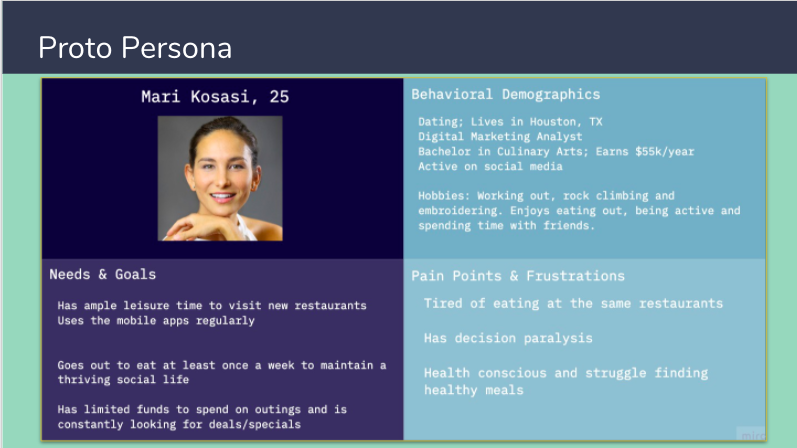
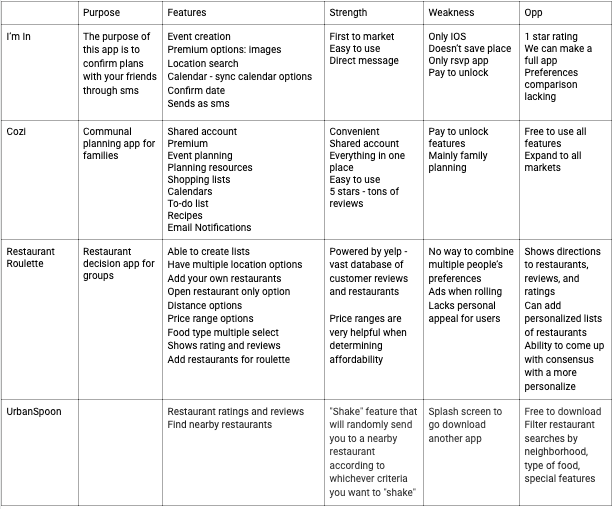
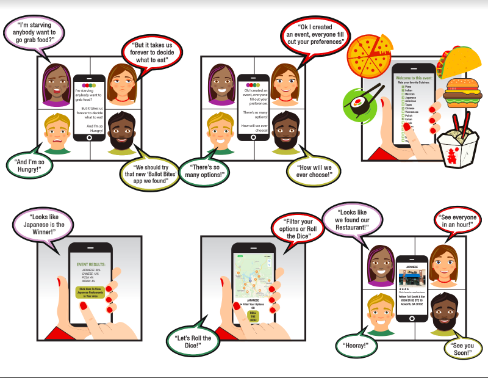
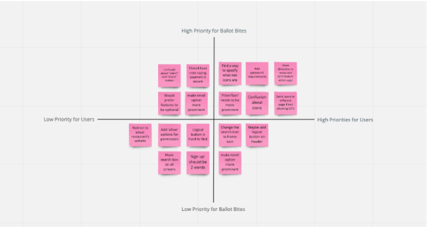

Ballot Bites

Overview
We are researching, validating, and prototyping our idea for a mobile application. We are utilizing the design thinking process without any constraints to design and develop a brand new product that solves a problem in our everyday lives, using UX design processes and tools.
Background
Goal: Improve the User Experience and retention by uncovering user pain points within the app, keeping in mind the cost of developing completely new features. An experience-driven strategy required us to focus on UX Research Methods first (surveys, emails & user interviews) to uncover the user pain points. We used a operational efficiency strategy to get us closer to our vision in a very resource-constrained environment.
Tools Used: Miro, Adobe Xd, Trello, Slack, Zoom, Google Docs, Google Sheets, Google Forms, Adobe Photoshop, Adobe Illustrator
Members: Erin England, Mayur Diar, Natasha Nanda
Problem
We have observed that restaurant goers struggle with agreeing on what and where to eat when planning outings which causes frustration while planning social experiences.
Solution
‘Ballot Bites’ assists users with decisions on what to eat and where to go. Family and friends complete individual ballots, and once results are calculated, the app presents a variety of restaurants for the group to choose. The app also offers a ‘roll the dice’ option to eliminate decision making. The ‘Ballot Bites’ app will effectively remove the frustration of what and where to eat.
User-Friendly
We wanted to better understand the experience of first time users with the app
Value
We also ran usability studies which helped us to discover that there was a high interest in features that were not easily discoverable. This led us to highlight features such as: next buttons on each onboarding screen so users will have to be more engaged.
Simplicity
Teams of 3 are tasked with choosing a local nonprofit and executing the UX/UI design process. The teams will create a high-fidelity responsive web design solution through a clickable UI prototype.
Research
How did you conduct the research?
Our methodology will begin with 5 one on one interviews with different participants that meet general requirements listed below for our study. Our team will use a semi-structured method for questioning. We will use a combination or probing and open-ended questions to gain qualitative information. We will also distribute a survey to collect general qualitative data. The survey will be created through a google poll and posted on social networking sites, such as Facebook, Instagram, LinkedIn, and WhatsApp.
The ideal participant will be a frequent mobile application user that is comfortable with technology. They will have enough leisure time to eat out at least once a week. These participants will allow us a greater understanding of the main struggles that the frequent diner is affected by.

How did you develop interview/survey questions?
We developed our interview/survey questions by using our proto-persona and user research plan as a guideline. We first brainstormed problems associated with going out to eat. We then developed research questions that are structured to help our team identify common consumer pain points and possible areas of improvement.
What are the key findings you derived from the interview/survey?
We learned that the main two concerns that our target audience has with going out to eat are the following:
1.) Deciding what and where to eat
2.) Coming to a group consensus
What other products solve a similar problem? How do they compare/contrast?What other products exist in this domain/industry?

Our main take away from our competitor analysis was that there are very few true competitors that meet the need of group consensus. The closest competitor that we found was Restaurant Roulette and this app lacked a communal aspect to it. All other competitors were indirect and only met a portion of the needs that our target audience expressed to us during our user research phase.
User Flow

Storyboard

User Testing
Prioritization Matrix

As we were improving the User Experience, we worked on refining the visual design of the app. We developed a rule-based system to support branding, typography, icons, and colors in order to achieve visual consistency with the styling of the app. The system served as a base for the entire user interface used on iOS, iPad, Android devices, the website, and all following marketing materials.
Wireframes
Why This Design?
We kept in mind that developing any new feature has a high cost and takes time, so we decided to use an on-boarding experience because it gives the user a guided introduction to the product, sets up some initial preferences, and points out critical elements in the User Interface. We can also reuse this feature in the future to introduce any new elements/features.